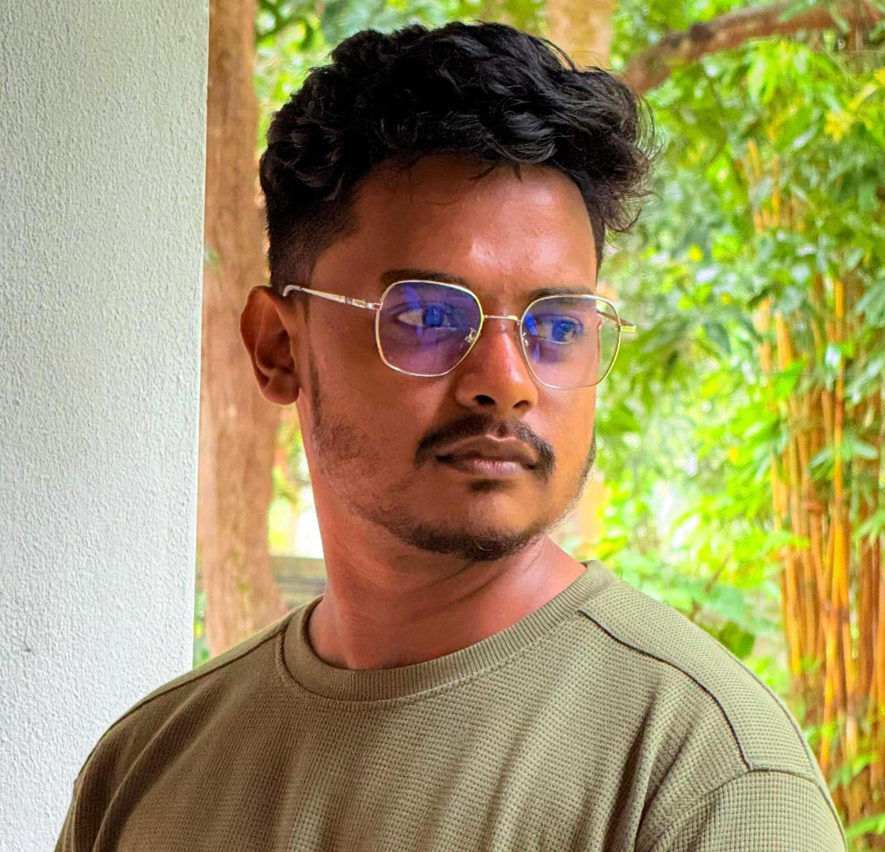
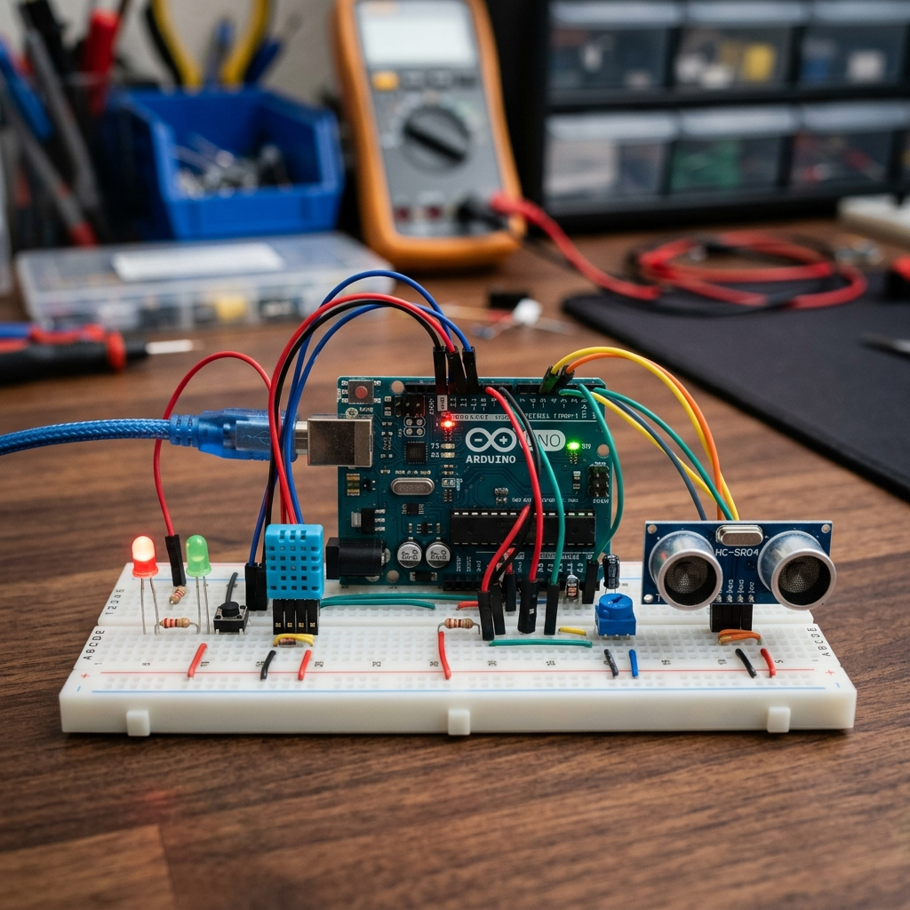
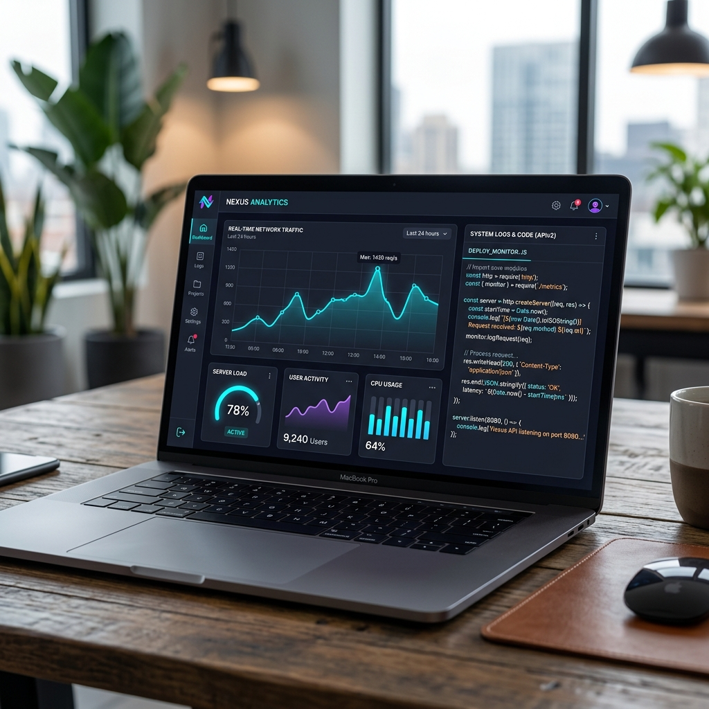

Passionate about exploring technology to solve real-world problems. With a strong foundation in problem-solving, software development, and I am continuously exploring the boundaries of modern tech innovations.

Currently pursuing my computer science degree with a focus on Artificial Intelligence and Machine learning. I have completed foundational modules in programming, software engineering, and network systems with distinction, showing a strong aptitude for analytical problem-solving.
I am fascinated by Backend systems,Machine Learning, and data automation. Personally, I enjoy teaching and working with students, reading up on engineering advancements, astro-physics,and participating in hackathons.
My goal is to become a versatile AI Engineer and/or Intelligent Automated solutions engineer.
Integrity, continuous learning, and collaborative innovation. I believe in writing clean code, building sustainable systems, self-learning new technologies, and always leaving a project better than I found it.

Module: Personalized Student Productivity Management System Using LLM
Objective: Scheduler.ai is engineered to optimize student productivity by delivering advanced, AI-driven task and workload management solutions. Leveraging React.js and Material UI for a modern, responsive user interface, alongside Django and Django REST Framework for a secure and scalable backend, the platform seamlessly integrates Google’s Gemini API and ChromaDB. This enables personalized task guidance, adaptive scheduling, and intelligent, context-aware support. Scheduler.ai empowers students to efficiently organize their tasks, access academic resources, monitor progress, and benefit from AI-assisted journaling and feedback, providing a comprehensive platform for enhanced productivity and academic success.
Description: Users can generate detailed subtasks, each supported by relevant resources such as videos, PDFs, websites, and comprehensive descriptions. The integrated AI assistant supports in-app journaling, efficiently retrieves information from diary entries, generates customized task recommendations. Progress is measurable through customizable assessments—including multiple-choice, essay, and coding exercises.
My Role: Lead Backend Developer
Outcomes: • Personalized Task Creation: Tailored task generation with detailed plans and relevant resources. • AI-Powered Digital Diary: Conversational interaction to create, edit, and retrieve diary entries. • Academic Resource Finder: Generates subtasks with videos, PDFs, websites, and other materials. • Progress Evaluation: Customizable test generation (MCQs, essays, coding exercises) for self-assessment. • AI Chatbot Assistant: Context-aware personal assistant for scheduling, guidance, and queries.

Module: Data Structures & Algorithms (Semester I)
Objective: Create a GUI application to efficiently manage and search student records.
Description: Developed a Python-based application using Tkinter and SQLite, implementing efficient sorting and searching algorithms to handle large datasets.
My Role: Backend Developer & Algorithm Designer
Outcomes: Reduced data retrieval time by 40% compared to legacy spreadsheet methods.
Duration: 1 Day
Purpose: IEEE Champions day
Observations:Learned about industry standerds , AI and its applications in IFS and how IFS works
Reflection: Gained knowledge about IFS and its applications
Duration: Half-Day Workshop
Purpose: Exposure to Agile software development environments.
Activities: Participated in a mock daily stand-up and observed CI/CD pipeline deployments.
Reflection: Understood the critical importance of version control (Git) in collaborative environments.
Role:Industry Relations and Finance Lead
Activities:Organized CodeQuest 2025
Skills Developed: Time management, Money management and adaptability when technical issues arose during the event.
I love doing presentations and teach others what I know, people say I'm really good at explaining complex topics in a simple way
Role: Treasurer
Skills Developed: Money management and people handling.
Type: Symposium
Organizer: Faculty of Computing and Technology
Role: Attendee
Key Learnings: Gained knowledge on latest research in the field of computing and technology
During my university studies, I participated in a group project where we had to design and present a technical solution related to our course. This experience helped me understand how to work effectively in a team.
One challenge we faced was managing time. To overcome this, we created a group timetable and assigned clear roles. In the future, I plan to communicate more effectively to ensure smoother collaboration.
Lab sessions have been an important part of my university experience, allowing me to gain hands-on experience. I learned how to apply theoretical knowledge in real situations and troubleshoot errors.
Initially, incorrect results were frustrating. I learned patience is key. I aim to improve my preparation before labs to handle technical issues more efficiently.
Throughout my university life, presentations, especially under the DELT module, helped me improve my communication. I learned to organize ideas clearly and respond during impromptu tasks.
To overcome nervousness, I practiced regularly. The feedback from my English lecturer was motivating. I aim to further improve my public speaking and use of visual aids.
Short-term Goals: Secure an internship as a Junior Software Engineer or Junior AI Engineer to gain industry hands-on experience and apply my academic knowledge to commercial products.
Long-term Goals: Lead a team developing sustainable tech solutions, potentially starting my own tech-focused enterprise addressing local industrial challenges.
Skills to Develop: Advanced Cloud Architecture, Machine Learning, Advanced Web Development, UI/UX, Data Analytics and Visualization